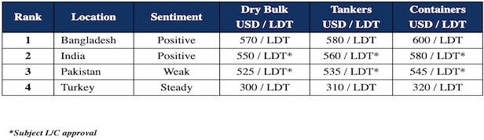

inWeekly Demolition Reports21/02/2023

This week, several more sales have registered as sub-continent ship recycling markets come roaring back – and a previously subdued Bangladesh starts to seemingly find some form once again, with some workable L/Cs from privately financed (rather than state controlled) banks.
Despite the ongoing discussions about an IMF loan in the amount of about USD 2 – 3 billion, end buyers have been working to find alternate ways to pay for vessels for some time now and without the troublesome central bank approval, which is denying the disbursements of U.S. Dollars for everything but essential items.
Demand has seems hotter in both Pakistan and Bangladesh this week, where they have been unable to import vessels for most of this year and it is good to see several deals being concluded off late, and at firming numbers to match.
India remains on the hunt for tonnage but has failed to keep up with a resurgent Bangladesh this week and will have to raise their respective game up once again, just to keep in contention to secure any available vessels.
Finally, Turkey records a small drop in import steel prices whilst levels for ships hold firm for the past month now and still no news of any market fixtures coming forth.
As the industry heads into March, the supply of tonnage has started to increase as dry (particularly Capesize bulker) rates suffer, and containers likewise show few signs of picking up just yet.
As such, after a year of reduced supply and tumbling prices, we can finally see the recycling markets starting to resume fire again, and we should expect further impressive sales and pricing in the weeks ahead.
For week 7 of 2023, GMS demo rankings / pricing for the week are as below.

📄 Download PDF: Ship-recycling-market-insight-week-07-2023-Back-in-Biz.pdfSource: GMS,Inc. ,https://www.gmsinc.net/gms_new/index.php/web